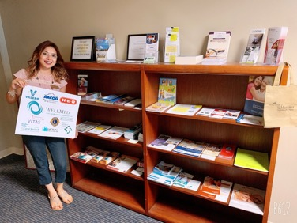
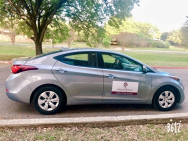
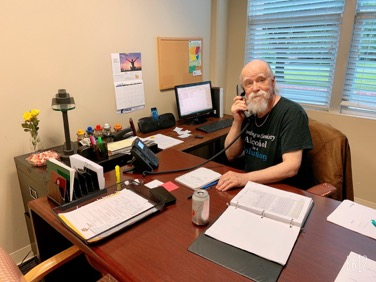
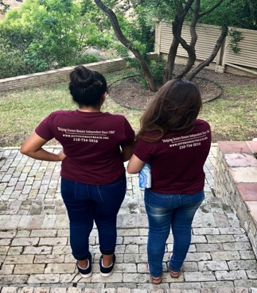

Services
Referrals and Resources
If you are looking for additional informaiton on ways to optimize your quality of life or that of a loved one, please call us.
We can be of assistance with the following: Senior Living Options, Caregiver support groups, Home health agencies, Hospice companies, Rehabilitation centers, Senior community centers in your area, Elder law attorneys, Continued education classes, Counseling Services, and much more.
Transportation
We provide free personalized transportation to Seniors over the age of 60 residing in the San Antonio area.
Don't miss an appointment!
Let us help you increase civic and social participation and afford you access to community and health services.
Telephone Reassurance
This program is designed to help homebound or disabled individuals remain independent in their homes by providing reassuring telephone calls, social support and safety checks.
We hope to reduce isolation and help program participants feel safe and more connected.
Volunteer Opportunities
Our volunteers are the heart of our organization.
We rely heavily on the support of community minded individuals like you.
We are currently seeking Volunteer drivers to assist Seniors to and from medical appointments, the grocery store and social events.
Sign up to take a ride, and help Seniors remain happy, healthy and engaged.
Special Events

This program helps seniors stay socially connected and engaged in their community by providing socialization opportunities through monthly gatherings, including specialized events for people living with dementia, and their family caregivers.